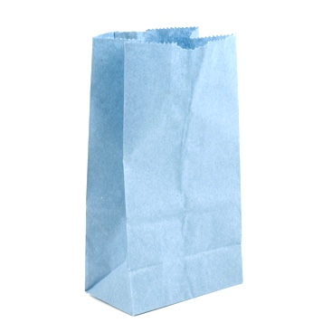

Four Times the Power
Download
About

The Quadrupal Drupal distro leverages the power of four to enable your developers to instantly double your site's performance.
And then double it again.
Born at a brown-bag session of experienced Drupalists at a Boston-area mini-con, the Quadrupal concept was created with you in mind. Quadrupal circumvents the risk of open container systems with a four-layer stack of open source technology, delivering the security you need.
Launch your next digital experience with four times the confidence: get four times more Drupal at the click of a button.
Click twice for Drupal 8!
And then double it again.
Born at a brown-bag session of experienced Drupalists at a Boston-area mini-con, the Quadrupal concept was created with you in mind. Quadrupal circumvents the risk of open container systems with a four-layer stack of open source technology, delivering the security you need.
Launch your next digital experience with four times the confidence: get four times more Drupal at the click of a button.
Click twice for Drupal 8!
Quadrupal HQ
Table Four
Davis Square
Somerville, MA 02144